速览
为了了解游戏信息，看官网曾经不可或缺；但仔细浏览网站的人比全盛期少了，在各种 SNS 上发布短信息或许更适合现代。不过，尤其是大作，官网短期内不会消失——系统而正确地发布完整信息仍然重要。他展示了《大乱斗 SP》官网的构成：他也参与了制作构成，每次更新都检查。大乱斗游戏内要素极多，网站层级也很深：斗士一览（每位斗士都可看）、玩法（各种模式与技巧、网络、amiibo 等）、场景（光普通场景就有 100 个以上，加上 DLC 更多）、道具（含精灵球宝可梦与辅助模型）、音乐（带试听）、影片（参战影片和「樱井政博的○○」等），以及与 Twitter 结合的信息展开、大会活动信息、大乱斗拳等——只是概览，也能感到信息量远超一般游戏。宣传很重要，成为信息枢纽的地方也很重要；比起按一般套路做网站，更想做成适合该作品的形式。初代《大乱斗》发表后、大致完成时，其玩法、乐趣和游戏性很难被相关人士理解，只有偏见走在前面：「任天堂角色互殴岂有此理」「比格斗游戏浅得多」……他自认已加入深度攻防，却打不破偏见之墙。于是他整理了大乱斗玩法与攻防的资料寄给杂志，几乎没有正经采用的；他把内容转用为技巧指南，就是初代官网「大乱斗拳」（Smash Bros. DOJO!!），HTML 也是他亲手写的——那时这类知识很少、能用的数据也很小，现在看有点害羞，但也觉得那个时代做得不错。这种苦涩经历，只要积极思考打开局面的办法，就能成为日后的养分；在《大乱斗 SP》里努力做参战影片，或许也和初代的挫折一脉相承。现在 SP 官网体量巨大，大概是游戏官网中相当大的——全怪游戏体量太大，承蒙任天堂负责人照顾。现在 SNS 更盛，网站的角色也许需要稍作改变；将来怎样才能有效传达信息呢？
1. 官网的角色 0:03
为了了解游戏信息，看官网曾经不可或缺。但仔细浏览网站的人比全盛期少了，在各种 SNS 上发布短信息，也许更适合现代。
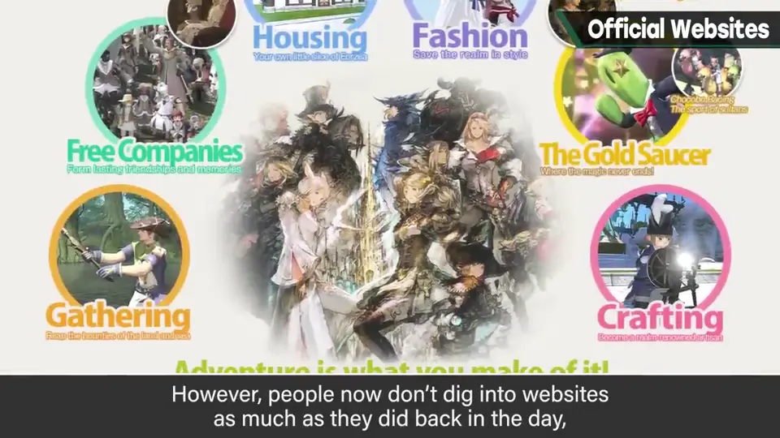
不过，尤其是大作，官网短期内不会消失。
2. 《大乱斗 SP》官网 0:35
这是《大乱斗 SP》官网的构成。他也参与了制作和构成，每次更新都会检查。大乱斗的游戏内要素极多，网站也有很深的层级：
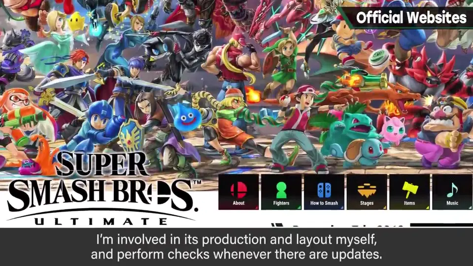
- 斗士一览：每位斗士都能逐个浏览
- 玩法：各种模式与技巧，网络、amiibo 等
- 场景：光普通场景就有 100 个以上，加上 DLC 更多
- 道具：也有精灵球宝可梦和辅助模型
- 音乐：带试听功能
- 影片：参战影片、「樱井政博的○○」等
- 与 Twitter 结合的信息展开、大会活动信息、大乱斗拳等
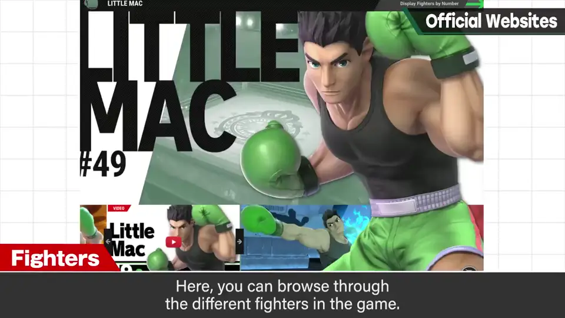
只是概览，也能感到信息量远多于一般游戏。
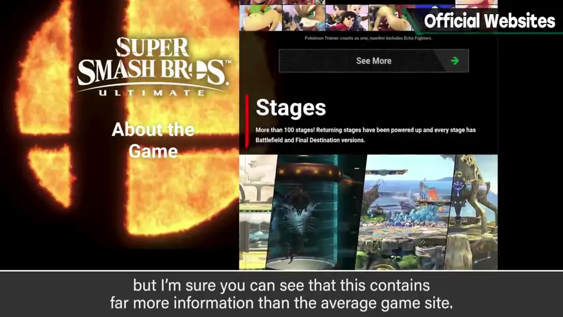
3. 初代的挫折 2:42
初代《大乱斗》发表后、大致完成时，其玩法、乐趣和游戏性很难被相关人士理解，只有偏见走在前面。
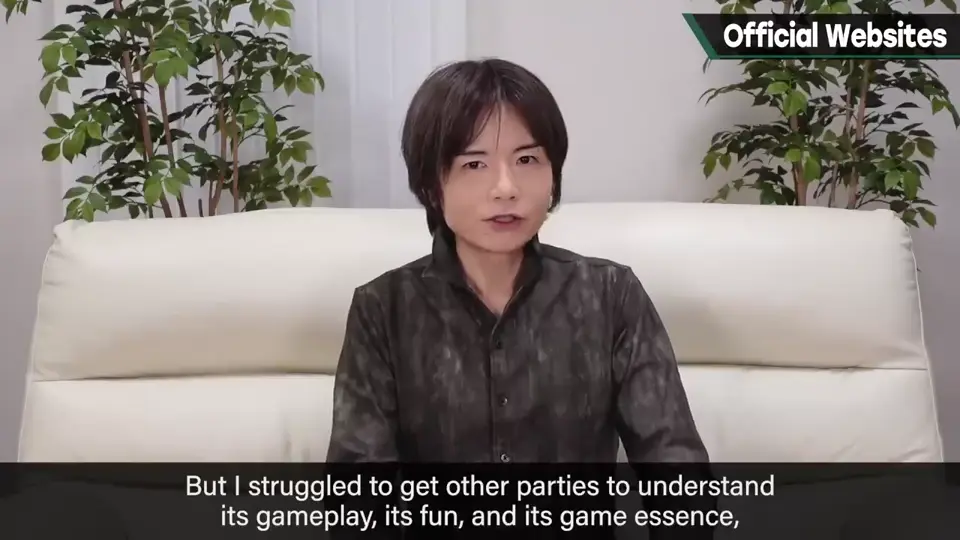
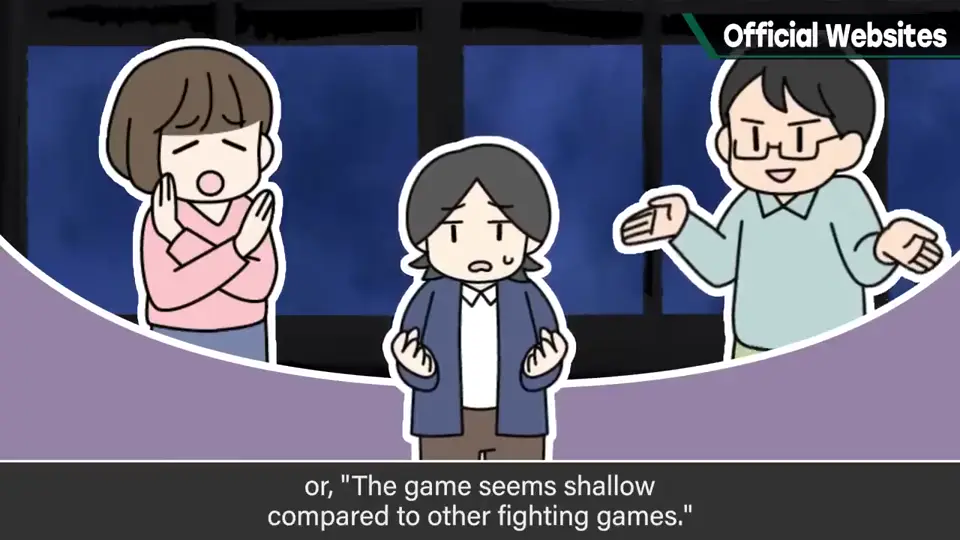
「任天堂角色互殴岂有此理」「比格斗游戏浅得多」……游戏内容和发售时一样，他自认已加入深度的攻防，却因为是前所未有的东西，打不破偏见之墙。
4. 大乱斗拳的诞生 3:10
于是他整理了大乱斗玩法与攻防的资料，寄给杂志，但几乎没有正经采用的。
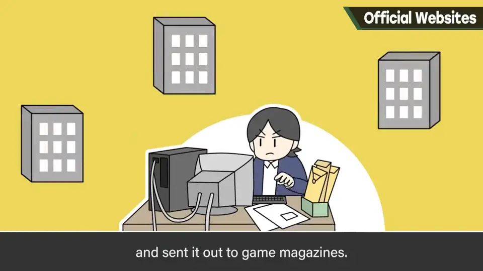
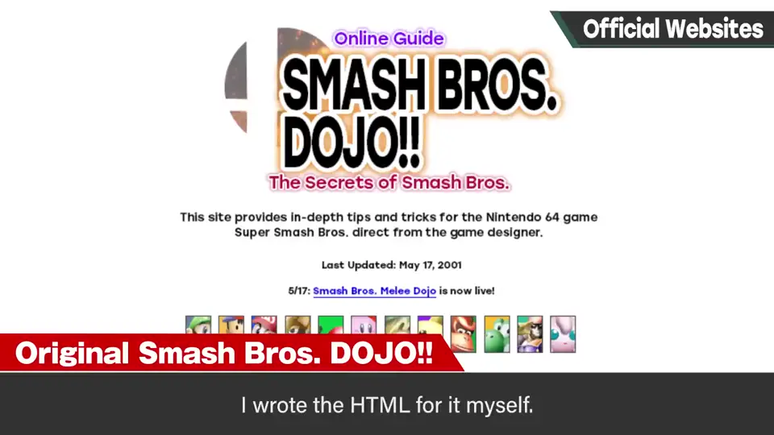
他把那些内容转用为技巧指南，就是初代官网「大乱斗拳」（Smash Bros. DOJO!!），HTML 也是他亲手写的。那时这类知识很少，能用的数据也很小，现在看有点害羞，但也觉得那个时代做得不错。
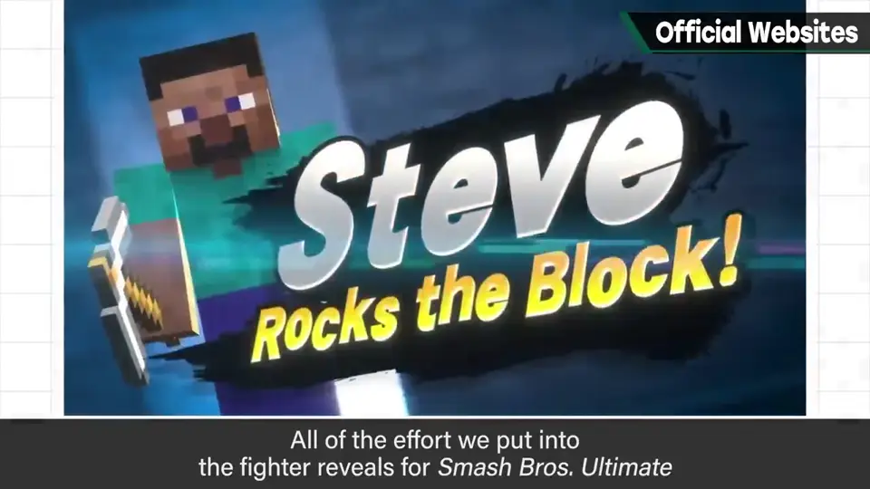
5. 现在与将来 4:10
现在《大乱斗 SP》官网体量惊人，只做了基础说明，但大概也是游戏官网里相当大的——全怪游戏体量太大。承蒙任天堂负责人照顾。
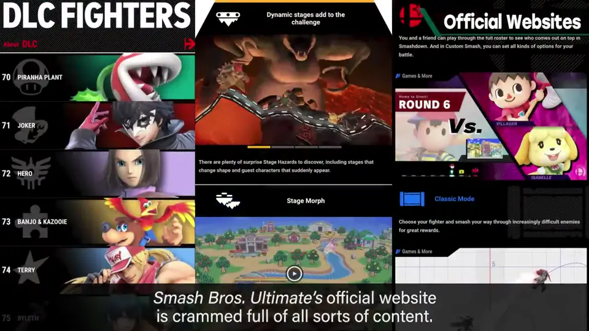
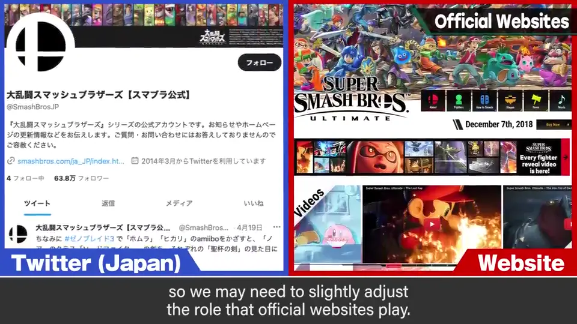
现在 SNS 更盛，网站的角色也许需要稍作改变。那么将来，怎样才能有效地传达信息呢？
自测题
1. 为什么樱井认为官网仍然重要？
大作需要系统、正确地发布完整信息，官网是信息枢纽。 0:20
2. 初代「大乱斗拳」是怎么诞生的？
初代不被理解，寄给杂志的玩法资料几乎没人采用，于是转用为技巧指南并亲写 HTML 做成网站。 3:10
3. 樱井从初代的挫折中得出什么？
苦涩经历只要积极寻找突破口就能成为养分，SP 的参战影片也许与此一脉相承。 3:50